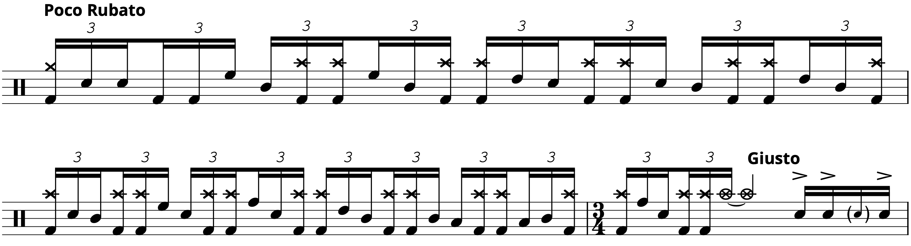
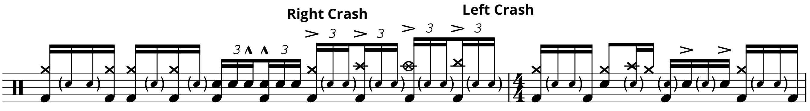

Transcription: “Dancing Men” — Dennis Chambers with The Buddy Rich Big Band

Alright, it’s time to jump back into the Buddy Rich memorial concert — sorry for the brief hiatus. We’re gonna pick it back up with Dennis Chambers on the tune “Dancing Men”, played from the first half of the concert.
On my Vinnie post, I talked about how the drummers from that night all had slightly different interpretations of how fast to play the charts. Dennis takes this one to the limit. 160 is about the fastest Buddy ever played this one; most of the time, he took it around 140. However, Dennis here looks like he’s trying to set the band on fire, pushing the chart to 160 and beyond — he frequently looks behind him as if to make sure that no one has fallen over:
The above video features both of Dennis’ songs, so just use the timecodes on the PDF to find the right moments for “Dancing Men”. Sorry for any confusion; this is the only official upload I could find that’s of any decent quality. I use that term lightly because about half way through “Dancing Men” the audio switches from stereo to mono. There are no words.
Anyhoo, I have two big chunks from the tune to share. The first is an 8 bar passage where Dennis trades licks with the band: one bar of groove with ensemble, then one bar of solo. Dennis shows off some blazin’ chops in these measures, first as six stroke triplets, next as singles with a little bit of crossover action. He also breaks out the double kick for one of these solos — I like to think of the first half of the show as the double kick half, because all of the double bass chops from this gig are found in part one. Out of the six drummers from the show, I’d say Dennis is second only to Gregg Bisonette in terms of double kick fluency.
After a minute of some more shredding, Dennis starts an open drum solo that eventually takes us to the finale. The solo kicks off with some slinky playing, as well as a flashy double kick crossover maneuver that riles the crowd up. He flubs the timing a little bit: beat three is rushed while beat four is dragged. I guess it all evens out!
Another crowd pleaser is a double stroke roll that features right hand sweeps: doubles played between two separate drums. I’m ~pretty~ sure the doubles are played as 16th note triplets:
The timing is a little loosey goosey at the least. Of course, the editor had to switch camera angles during the lick, obscuring the exact orchestration. I think I got the drums correct, but it’s tough to tell.
Things start to get gnarly when Dennis begins ad-libbing the hands over this following foot ostinato:

Dennis starts with 16th notes on the hands, before he switches to 8th note triplets, creating a rather intense polyrhythm:
Also notice the flam patterns he applies, which further adds to the disorientation. To make my life difficult spice things up even more, he slips in 16th notes with the triplets while keeping up his foot pattern:
This solo idea has been a longtime favorite for Dennis: building intense independence patterns split between different limbs, Tony Williams style. You can hear him do the same thing during this solo with Santana from 2006. Notice how he ad‐libs different subdivisions on the hands over a kick pattern. All while chewing gum!
Dennis whips out the crossover cymbal joint once more as the solo wraps up, before dishing out some vicious singles and cueing the rest of the band back in. Whew! This one’s a real scorcher for sure.
I should probably talk about Dennis’ setup, because it’s little unusual. He has a ride and a China on his right side, and two crashes on his left. There’s one crash in a pretty typical position in front of the snare, but he has another one way off to his left. Normally when I do live videos, I have two crash cymbal notes — left side and right side. For this number, I decided to do it the follow way:
One last thing; I left out the left foot hi hat pedal for most of the score. I think I need to face facts and accept that, most of the time, there’s nothing important going on there. Unless there’s some linear lick built with it, drummers just let it the hi hat pedal do what it wants. Dennis typically stomps on 8th note upbeats, or some flurry of rhythms that I didn’t have the patience to get all down.
Posted on November 22, 2020
Tags: 2020 • Transcription • Dennis Chambers • The Buddy Rich Big Band • 1989 Buddy Rich Memorial Concert